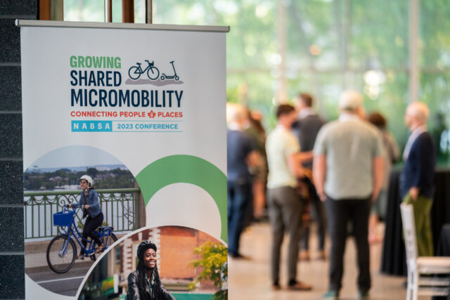
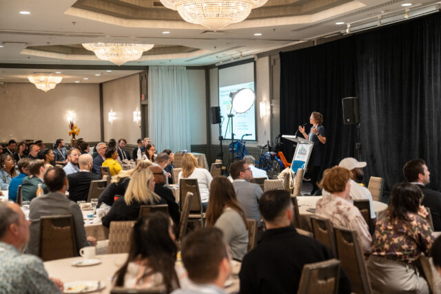
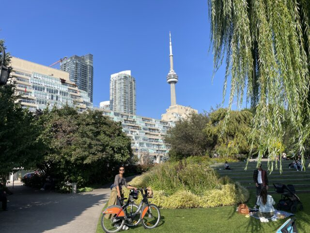
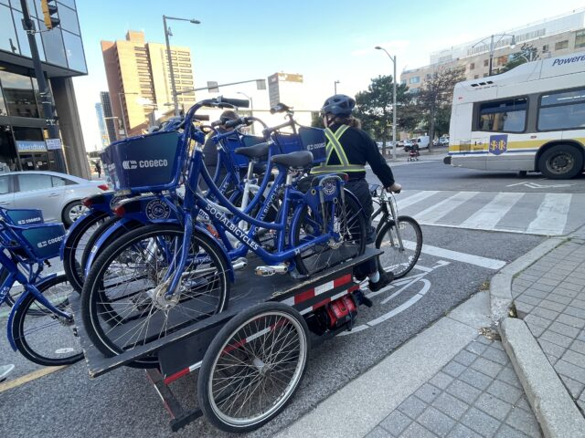
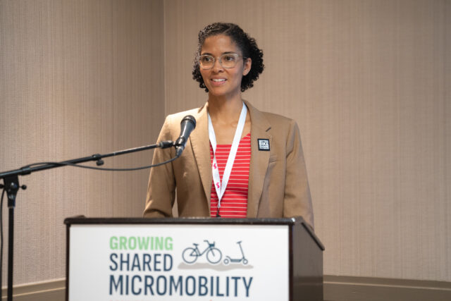
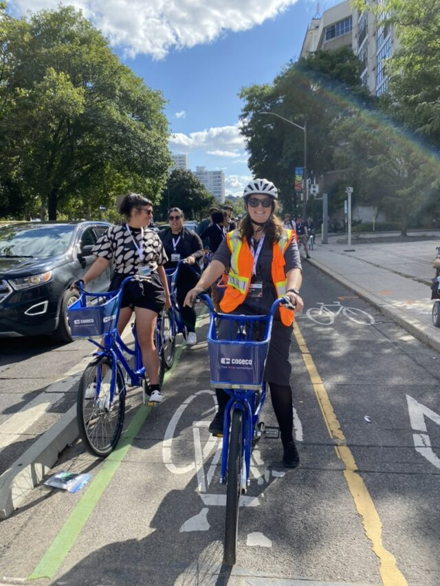
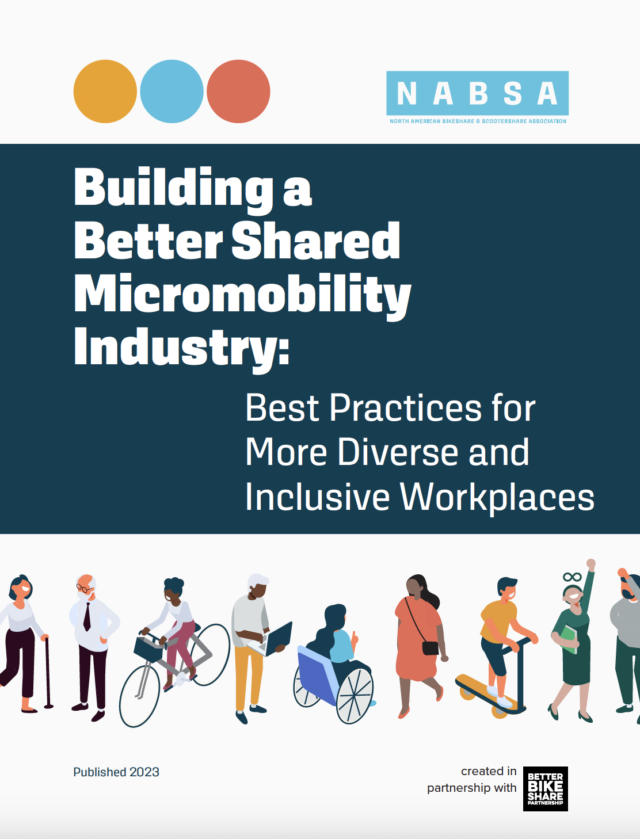

Learnings from NABSA’s 2023 Conference
by Kiran Herbert, Communications Manager
October 3, 2023
From September 19-22, our industry met in Hamilton and Toronto, Canada, in order to gather, learn, and define the future of shared micromobility together.

For those working in shared micromobility, whether at a corporation, nonprofit, or municipality, the North American Bikeshare and Scootershare Association’s annual conference is a principal event. Once a year, hundreds of people gather for three days of keynotes, mobile workshops, and engaging conference sessions. This year’s conference took place from September 19-22 and for the first time, spanned two cities: Hamilton and Toronto, in Ontario, Canada.
The event was truly multimodal, with most participants journeying by bus, train, bike, and their own two feet over the course of the conference, which started in Hamilton and finished in Toronto. Mobile workshops and networking events were offered in both cities but all of the conference sessions were held in Hamilton, a city with a population of around 579,200 on the western side of Lake Ontario.
The keynote speaker was Karla Avis-Birch, the Chief Planning Officer at Metrolinx, the transportation planning agency for the greater region. Other featured speakers included Hamilton Mayor Andrea Horwath, Peter Topalovic, who oversees bike share for the City of Hamilton, and Caroline Samponaro, head of transit and micromobility policy at Lyft, the conference’s premier sponsor. Sessions ranged from “Scaling Systems for Impact: Equipment, Electrification, and Connectivity” to “Marketing Micromobility: Understanding Your Market and Building a Plan to Drive Success.”
What follows are 11 high-level takeaways from this year’s conference, with an emphasis on how we can make shared micromobility more equitable.

Caroline Samponaro, head of transit and micromobility policy at Lyft, speaks to attendees.
1. Shared micromobility works best as part of a full transit ecosystem.
The coolest thing about the conference being in two cities was the opportunity it provided to experience the region’s rich transit offerings. Trains and buses ran regularly, were priced affordably, and consistently linked to bike share stations. In “Transit and Micromobility: Multimodal Connections,” we heard from panelists in the private and public sectors about how to better integrate bike share into a city’s transportation network.
Danny Pimentel, active transportation manager at the City of Hamilton, suggested municipalities make bike and transit networks resemble a subway map, with bike share stations plotted along key corridors. He also noted that reforming zoning bylaws and eliminating parking minimums were an important part of the multimodal conversation. Ghazaleh Mohseri, a researcher from York University, showcased new software to help municipalities station site, while Will Sanderson from Jawnt discussed how including bike share in work-provided transit benefits is a game-changer. Lastly, Cameron Monagle showcased how the Transit app is making it easier for users to go multimodal and for transportation systems to integrate on one platform.
For most systems, the session also cast light upon the ultimate multimodal dream: An integrated payment method for transit and bike share and a pricing plan that allows people to easily move between modes.

Attendees rode Tangerine bike share in Toronto.
2. We need to ask people how they’re using bike share.
In “Marketing Micromobility: Understanding Your Market and Building a Plan to Drive Success,” Kimberley Fischer, the senior marketing coordinator for outreach at Bicycle Transit Systems, spoke about the work her team has done in Los Angeles to understand how people use Metro bike share. A recent survey found that only 17% of people would use bike share to commute to work and that 37% of the respondents said they would use bike share solely for recreation.This is significant because the collateral and marketing for bike share often show people who look like they are commuting. The lesson was clear: Build in the time to ask people how they want to use bike share and adjust your marketing and engagement strategy accordingly.
3. If more money was available, systems would invest it in more community engagement.
In that same marketing session, an audience member asked what systems would do if they had unlimited funds. All of the panelists — from Los Angeles, Mexico City, and Cincinnati — said they would use it for more outreach and engagement with people who are using their systems less often, or not at all. It takes staff time to understand the needs and desires of different neighborhoods and the staff doing that work needs to be paid.

Hamilton bike share’s adaptive bike hub is housed in a custom shipping container.
4. Integrating adaptive bikes and cargo bikes into bike share are top of people’s minds.
At last year’s NABSA conference, there were two sessions dedicated to adaptive bike share and the topic was still top of people’s minds (our own uptick in articles featuring adaptive bike share added to the conversation). This year, one of the mobile conference workshops allowed participants to tour Hamilton’s adaptive program, which operates out of a repurposed shipping container on the city’s east side. In a fun twist, POGOH, Pittsburgh’s bike share system, announced during the conference that it had purchased a shipping container to launch an adaptive bike program of its own (more on that to come in a later article).
There was also a lot of discussion amongst conference attendees about the popularity of cargo bikes and how they might be incorporated into bike share. In a session on partnerships, Shane Paul, with Shared Mobility Inc., talked about how his organization is repurposing old bike share bikes to create e-bike libraries across the country — while they don’t currently have any cargo bikes, it’s easy to see the opportunity that the library model poses.

One of Hamilton Bike Share’s utility cargo bikes.
Hamilton Bike Share has its own cargo bike that it uses to rebalance its system but it was Tembici, in a session on “Global Micromobility Success Stories,” that got everyone’s attention. In Bogota, the system currently has 150 cargo bikes available at stations! And speaking of Tembici…
5. Tembici is taking bike share in new directions.
In addition to offering cargo bikes, the bike share system — the largest in Latin America, with operations in 14 cities in Brazil, Argentina, Chile, and Colombia — is about 90% e-bikes and receives no subsidies from local governments.
Tembici stands apart from its counterparts globally thanks to a unique revenue model: In addition to its user base (55% of its revenue share), the company receives funding from advertisers, sponsors, and last-mile partnerships (44% of revenue) with companies like iFood, which pays to make the bikes available at more affordable prices for its food delivery workers. Most unique, however, is how Tembici, a certified B Corp, has been able to authenticate the carbon credits from its bike rides and sell those at a profit (1% of revenue). While proportionally small, the company expects this revenue stream to grow going forward.
The company is also doing something right by female riders. Bike share has a known gender gap and the proportion of women who use Tembici is higher than amongst cyclists in general (six times higher in Brazil, 12 times higher in Chile, and 1.5 times higher in Argentina). The company is currently studying why this might be — once there’s more data, we’ll be sure to report on it.

BBSP’s Senior Partnership and Program Manager, Tangier Barnes Wright, moderates a conference session.
6. Systems shouldn’t sleep on youth.
Many conference attendees spoke about the engagement they’ve seen from younger riders, especially following targeted outreach. That includes Cincinatti’s Red Bike, where the system has a 14-year-old age requirement and has partnered with local organizations to host regular youth rides, and Biketown in Portland, Oregon, where the system has a 16-year-old age requirement and conducts community outreach and engagement in partnership with local high schools. Detroit’s MoGo system allows youth as young as 13 to ride their bikes and has as partnership with local high schools.
7. Equity needs to be incorporated from the beginning.
In a session on “The Role of Partnerships in Shared Micromobility,” Elliot McFadden, shared mobility program coordinator for the Minnesota Department of Transportation, spoke to the need for the public sector to be more “muscular” with its shared micromobility partners, reasoning that you “can’t change how people move with a hands-off approach.” He underscored how equity needs to be incorporated from the beginning and that there should be consequences for partners that don’t comply.
In that same session, Waffiyah Murray from Indego bike share discussed the system’s multifaceted partnerships, and how it has ensured equity is baked into everything it does through a comprehensive five-year Indego Equity Plan.

One of the four mobile workshops offered at the conference.
8. It’s time to invest in in-dock electrical vehicle charging stations
According to NABSA’s 2022 State of the Industry report, about 65% percent of total shared micromobility trips taken in 2022 were made on e-bikes and e-scooters, and they accounted for well over half of the total vehicles deployed across North America. Electrification is the future and in order to meet the demand and lower the carbon footprint rebalancing requires, systems should be shifting to in-dock electrical vehicle charging stations.
In a session on “Scaling Systems for Impact,” David White, executive director at Bike Share Pittsburgh, spoke about how the POGOH system has managed to add in-dock charging to one-third of its stations in partnership with the city’s utility provider. These POGOH stations include an electrical meter, just like those in people’s homes, to measure the amount of electricity used. While some folks questioned the logic behind electrifying a system’s most popular stations due to the high turnover, White says it still makes sense as the bikes are able to charge overnight.
Mark Roberts, the head of business strategy for shared micromobility at Lyft, spoke to how in-dock charging is live in Barcelona and Madrid — in the latter, it’s been a driving force behind the tripling of trips per day compared to 2019. Divvy, Chicago’s system, has debuted in-dock bike and scooter charging, and electrifying key stations are part of the system’s growth plan. Across Lyft’s markets, demand for in-dock charging is growing.
9. Linking bike share to parking actually makes sense.
In Toronto, bike share is under the purview of the Toronto Parking Authority, a completely self-funded department with seven key stakeholders, all with different viewpoints to be balanced. For Justin Hanna, the director of Toronto Bike Share, the connection is genius, as it ensures that cars and bikes are in it together. According to Hanna, “Linking parking revenue to bike share success has helped tremendously” in growing bike share, ensuring that right-of-way conversations are inclusive of all modes and solutions are collaborative. By working as one department, it’s been easier to not only fund a massive system expansion (currently underway) but also to convince key stakeholders that investing in bike share is a win-win for everyone.
10. Push for bike share to be publicly funded (and included in electric bike rebates).
During the conference, Lime published a new study on its reduced-fare program and its findings contributed to a rich discussion already happening around the need for cities to subsidize shared micromobility like they do transit. Bike share serves as an essential mobility service for transportation insecure populations and it benefits society as a whole when we make it more affordable and accessible to those in need. Another key takeaway from the study: As more cities and states begin to offer e-bike rebates, it’s important to incorporate bike sharing.
One idea from this paper that I don’t want to get buried: expanding e-bike rebates to incl. bikeshare memberships, *in addition to* buying folks bikes of their own. Could be so clutch for people who don’t have good storage, can’t lift bikes up stairs, etc.https://t.co/X2otfSdrma
— streetsblogkea (@streetsblogkea) September 25, 2023

11. In addition to focusing on the shared micromobility industry’s user base, we need to cultivate more inclusive, equitable, and diverse workplaces.During the conference, NABSA released an update to its 2019 Workforce Diversity Toolkit with lessons learned from the last four years. “Building a Better Shared Micromobility Industry: Best Practices for More Diverse and Inclusive Workplaces” offers best practices for cultivating a diverse workplace and fostering a culture ingrained with the values of diversity, equity, inclusion, and belonging (DEIB). While the case studies focus on the shared micromobility industry, this guide is relevant to any organization that wants to improve using DEIB principles. We highly recommend giving it a read and applying the learnings to your own workplace.
The Better Bike Share Partnership is funded by The JPB Foundation as a collaboration between the City of Philadelphia, the National Association of City Transportation Officials (NACTO), and the PeopleForBikes Foundation to build equitable and replicable bike share systems. Follow us on LinkedIn, Facebook, Twitter, and Instagram, or sign up for our weekly newsletter. Have a question or a story idea? Email kiran@peopleforbikes.org.